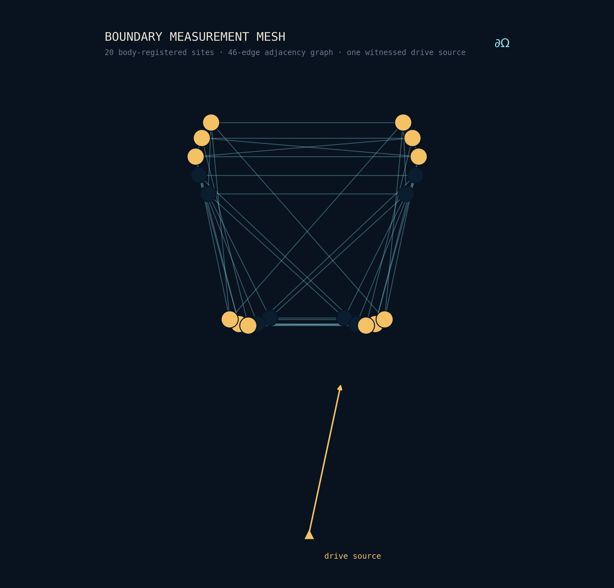

Witness-qualified
Nothing unaccounted for
Every capture is sealed into an immutable packet with complete provenance — what drove it, when, under what conditions — so any session can be replayed and audited from the raw record.
Ethical Standards
In health, integrity can't be a policy you add at the end — it has to be built into the mathematics. Ours is. Here is what we hold ourselves to, and how the system enforces it.
The line we hold
We form images, maps, and fields of the body's boundary response. We do not output diagnoses, treatment instructions, or clinical rule-in / rule-out determinations.
That boundary is deliberate and permanent in our consumer and research products. It protects the people who use them, and it keeps every claim we make inside what the evidence actually supports.

Integrity
Rigor isn't only in the math — it's in how honestly a result reports its own strength.
Witness-qualified
Every capture is sealed into an immutable packet with complete provenance — what drove it, when, under what conditions — so any session can be replayed and audited from the raw record.
Graded evidence
Results carry an evidentiary-maturity grade, and no part of the system may label an output stronger than the witnessed evidence supports. Honesty is enforced, not requested.
Deterministic
The engine is a deterministic analytic surrogate, not a trained model. Every result is a defined function of its inputs — reproducible exactly, with no silent model updates changing what your numbers mean.
Your data, your body
Health data is among the most intimate a person has. We treat it that way — with the smallest footprint the science allows.
Readings are processed on-device wherever possible; any sharing is explicit, time-bounded, and revocable; and professional and research use is consent-driven from the first capture. We collect what the measurement needs and no more. Read our privacy policy →
The smallest footprint the science allows — explicit, time-bounded, revocable.
Clinicians, regulators, and partners can request the integrity documentation — packet schemas, evidence-grading definitions, and the adjudication predicates behind them — under NDA.